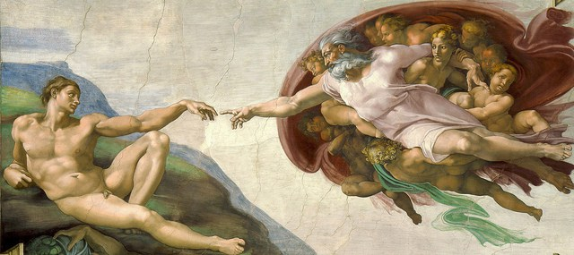
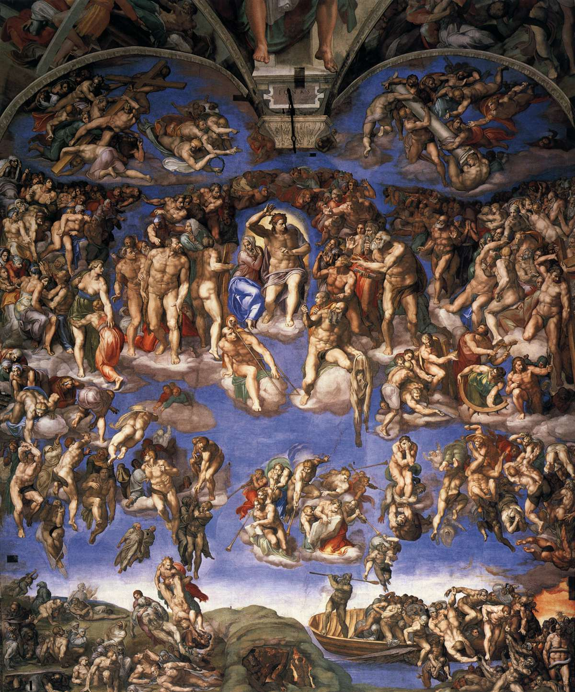

The Sistine Chapel
Pope Sixtus IV requested a chapel for domestic services. The Sistine chapel is located in the Vatican City, Rome. In 1508, Pope Julius II hired Michelangelo to paint the ceilings. It is a fresco, a traditional method of painting. The paintings on the ceiling are centered around stories from The Old Testament, beginning with The Creation and ending with The story of Noah and the great flood. The Northern wall of the chapel was dedicated to paintings of the life of Jesus. Some of the stoires included the baptims of Jesus and the Last Supper. The Southern wall has frescoes from scenes from the life of Moses. The rear wall of the chapel includes the Last Judegment. The central part of the ceiling shows stories from Genesis. The paintings on the ceiling took four years to complete. Michelangelo began working in 1508 and completed his work in 1512. His efforst took a toll on his health. He breathed in lots of paint from having to lay on his back.
The Creation of Adam
The Sistine Chapel is among one of Michelangelo's most famous works. There are a few sections that stand out, including "The Creation of Adam." The historic scene is located on the central wall which depict stories from Genesis. The painting shows God on the right as he reaches out towards Adam on the left. Although contrary to historical renditions of God, Michelangelo depicts Him in a casual and accesible state as He reaches out to Adam. On the other hand, Adam leans back and reaches out to God almost haphazardly. Their touch will not only give Adam life, but the entire human race.
The Last Judgement
The Last Judgement is another amazing scene that is included in the Sistine Chapel. This scene depicts the end of time: the righteous are exalted and sent to live with God and the wicked are doomed to endless misery. This was a daunting scene for Michelangelo to depict; it is the moment the whole world has been waiting for. Pope Paul III believed he was up to the task and commissioned Michelangelo to repaint the altar’s wall with this historic scene. In total, the wall contains 300 muscular figures that are all arranged into different levels. The uppermost arrangement of figures includes Christ with Mary and The Saints. Below Christ is a group of angels. The lower left portion of the composition shows the dead rising up from their graves. Some rise up to live with God while others are dragged back down. The right part of the compositions shows demons dragging the damned to hell while angles keep others from ascending upwards. Overall, Michelangelo’s fresco on the back wall of the chapel was revolutionary for its time and still continues to attract thousands of people every day.
Sources
- https://www.britannica.com/biography/Michelangelo
- https://www.biography.com/artist/michelangelo
- http://www.bbc.co.uk/history/historic_figures/michelangelo.shtml
- https://www.notablebiographies.com/Ma-Mo/Michelangelo.html
- ItalianRenaissance.org, "Michelangelo’s Creation of Adam," in ItalianRenaissance.org, September 14, 2012, http://www.italianrenaissance.org/michelangelo-creation-of-adam/.
- https://www.khanacademy.org/humanities/renaissance-reformation/high-ren-florence-rome/michelangelo/a/michelangelo-last-judgment
- https://www.khanacademy.org/humanities/renaissance-reformation/high-ren-florence-rome/michelangelo/a/michelangelo-last-judgment
Written by Julianna Paylor